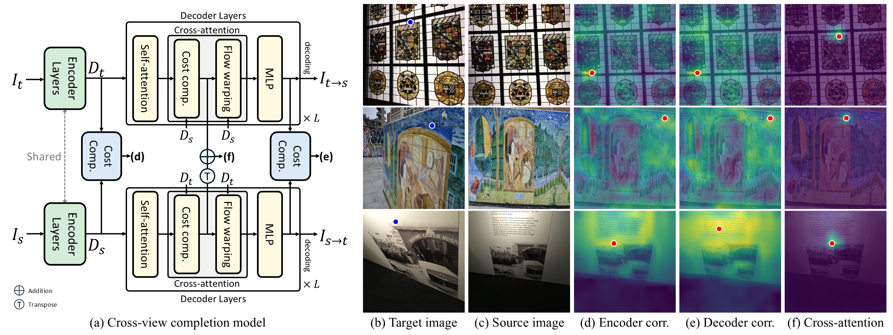
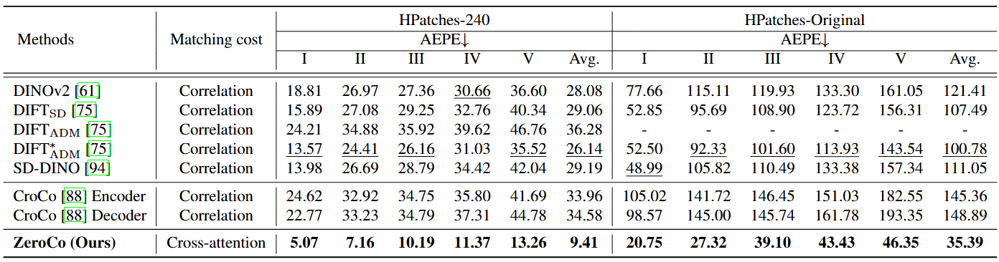
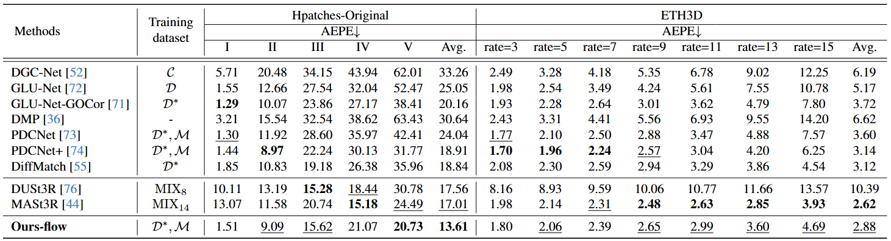
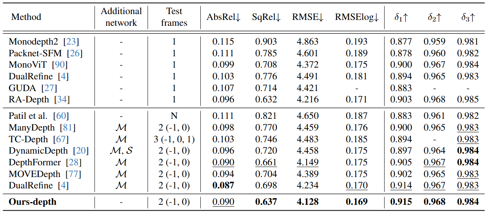

Cross-view completion models are zero-shot correspondence estimators.
Given a pair of images consisting of a target image (left) and a source image (right), we visualize the attended region in the source image corresponding to a query point marked in blue in the target image. The point with the highest attention is marked in red.
Although cross-view completion is not trained with correspondence-supervision, its cross-attention already establishes precise correspondences, especially under extreme viewpoint change.
Abstract
In this work, we explore new perspectives on cross-view completion learning by drawing an analogy to self-supervised correspondence learning.
Through our analysis, we demonstrate that the cross-attention map within cross-view completion models captures correspondence information more effectively than other correlations derived from encoder or decoder features.
We verify the effectiveness of the cross-attention map by evaluating on both zero-shot matching and learning-based geometric matching and multi-frame depth estimation.
Cross-view Completion and Correspondence

Analogy of cross-view completion learning and self-supervised matching learning.
The cost volume learned by (b) the cross-attention layers within cross-view completion models closely resembles that of (a) traditional self-supervised matching methods.
Both cost volumes undergo similar computations to reconstruct the target image by learning to find the correct correspondences to minimize the matching costs between the target and source images.
Matching Costs in Cross-view Completion

Visualization of matching costs.
We visualize matching costs for the (d) encoder, (e) decoder, and (f) cross-attention components in cross-view completion models.
In the source image (c), the attended region corresponding to the query point marked in blue in the target image (b) is highlighted, with the highest attention value marked in red.
The cross-attention map (f) shows the sharpest focus, while encoder and decoder correlations exhibit broader attention, showing that geometric cues are most effectively captured by the cross-attention map.
Zero-shot Matching Qualitative Results

Visualization of matching costs in previous zero-shot matching methods and cross-view completion models.
Given a pair of images consisting of a target image (a) and a source image (b), we visualize the attended region in the source image corresponding to a query point marked in blue in the target image.
The point with the highest attention is marked in red.
Learning-based Matching Qualitative Results

Qualitative results on HPatches. The source images are warped to the target images using predicted correspondences.
Learning-based Depth Estimation Qualitative Results

Qualitative results on the KITTI. We compare our method with multi-view depth estimation models that leverage epipolar-based cost volumes.
Zero-shot Matching Quantitative Results

Zero-shot matching results on HPatches.
Zero-shot performance of pretrained models by evaluating their cost volumes on both HPatches-240 and HPatches-Original, which represent 240 × 240 and original resolutions, respectively.

Zero-shot matching results on ETH3D.
Zero-shot performance of pretrained models by evaluating their cost volumes at the original resolutions of ETH3D.
Learning-based Matching Quantitative Results

Learning-based matching results on both Hpatches and ETH3D.
A higher scene label or rate, such as V or 15, corresponds to more challenging settings with extreme geometric deformations.
Learning-based Depth Estimation Quantitative Results

Depth estimation results on the KITTI.
We compare our method with multi-view depth estimation models that leverage epipolar-based cost volumes.
Citation
If you find our work useful in your research, please cite our work as:
Acknowledgements
The website template was borrowed from Michaël Gharbi.